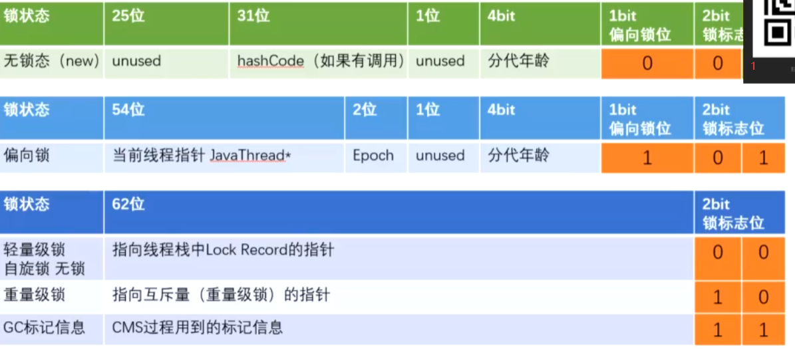

JUC
CAS

asm :汇编
cmpchg: compare and change
if_mp:多个cpu,加锁
写的过程中被改变?所以不能保证原子性
lock cmpxchg指令
保证原子性,过程锁住
硬件
lock指令在执行后面指令的时候锁定一个北桥信号
synchronized
偏向锁 时延4s 取消参数:-XX:BiasedLockingStartupDelay=0
标记偏向锁位
记录JavaThread
偏向锁->自旋锁 任何竞争都会触发,先取消偏向锁,然后一起抢自旋锁
自旋锁:Lock Record指针谁成功cas改成了就是谁的,一直自旋尝试修改
自旋超过10次,升级成重量级锁(是可以修改次数的 -XX:PreBlockSpin)
重量级锁 指向互斥量的指针
队列 wait notify等,不消耗cpu
锁降级 gc的时候触发,没人引用了已经,所以没意义
锁消除 是不可公用资源时 不会被其他人引用会取消锁 StringBuffer 的append
锁粗化 加在上一层的代码块上
字节码级别: monitorenter monitorexit
执行过程中自动升级
lock cmxchg
volatile
线程可见性
指令重排序
内存屏障
JSR
loadload
storestore
loadstore
storeload
hotspot

fence()
为什么不用原语屏障 --->移植性不好
lock
锁总线
MESI
modified
Exclusive
Shared
Invalid
超过缓存行不能保证一致性 ---> 锁总线
DCL
为什么check两次
在半初始化状态被别人拿走创建对象并指向后,又创建了新的对象并指向
为什么volatile
如果指令重排序 某个线程就可能会拿到半初始化的对象,即默认值,前面的累加等操作就会白做
超线程
ALU 单元对多个寄存器单元 单核双线程的由来
线程 cpu执行的基本单位
进程 cpu分配资源的基本单位
cache line
按块读 8字节
对象内存
普通对象
markword 8字节 8 记录锁信息(synchronized)
class pointer 4字节 8
instance data 0 0
padding 4字节 0
对其到能被8整除

数组
ThreadLocal